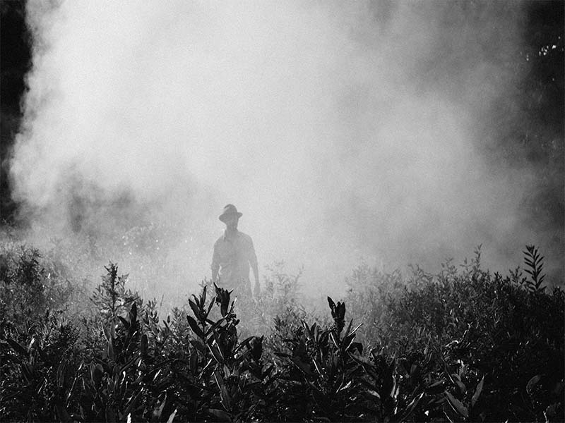

Los factores artificiales que dañan la flora son básicamente la contaminación, la lluvia ácida y la deforestación.
1.- La contaminación: Imposibilita el crecimiento de muchas especies vegetales, porque la presencia de sustancias químicas en el suelo altera los procesos vitales de las plantas. Si se observa la vegetación en Santiago, se nota que su ubicación está restringida a los alrededores del sector urbano. No existe una gran variedad de especies, como ocurre en los sectores no urbanos, donde el hombre ha tenido un menor grado de influencia y son menores los niveles de contaminación.
2.- La lluvia ácida, consecuencia de las actividades industriales y del transporte, contamina la atmósfera y es responsable de la destrucción de grandes bosques. También afecta el suelo, que se contamina con sustancias ácidas que dificultan o impiden el crecimiento de nuevas especies vegetales, con lo cual se favorece la erosión del suelo. En Europa se instalaron estaciones medidoras del contenido de ácidos en las lluvias ácidas sobre todo el continente. Así, frente a niveles altos se puede restringir la emisión de los gases industriales.
3.- Las prácticas forestales y agrícolas: La deforestación produce el exterminio de diferentes especies vegetales. Un mal manejo de la actividad agrícola también puede alterar el recurso flora, ya que ésta necesita del suelo para vivir y su existencia está fuertemente condicionada a este recurso. Cualquier alteración que sufra el suelo, afectará inevitablemente las especies vegetales. Efectos del deterioro de la flora
1.- Efectos sobre los seres vivos: El exterminio de las especies vegetales determina una disminución de la cantidad del oxígeno producido por la fotosíntesis, lo que afecta las cadenas tróficas. Los vegetales son organismos productores de materia orgánica y alimento en las comunidades biológicas; por lo mismo, la carencia de la flora incide en el desarrollo de la vida.
2.- Efectos sobre el suelo: Otro efecto importante, consecuencia de la reducción de la flora sobre el ambiente, es la desertificación, es decir, la progresiva erosión que transforma un suelo fértil en un desierto. Este proceso se ve más favorecido aún si la zona en cuestión presenta un clima árido y escasas precipitaciones.
Los factores que más afectan a este recurso, provienen de la acción directa del hombre, que produce el llamado efecto antrópico. Los principales problemas ocasionados por la acción humana son: la caza y la pesca indiscriminado, el comercio ilegal de especies animales y la introducción de especies no autóctonas.
1.- Caza indiscriminada: La caza indiscriminada ha provocado que varias especies se encuentren en peligro de extinción, tanto a nivel nacional como mundial. Algunas especies afectadas son el culpeo de Tierra del Fuego, la chinchilla chilena y la chinchilla andina.
2.- Pesca indiscriminada: La intensa actividad pesquera en las costas pone en peligro de extinción las especies marinas. Actualmente, en Chile, la sardina, la anchoveta y el jurel están en serio peligro de desaparecer. Es de gran importancia que se mejoren los mecanismos de explotación de los recursos pesqueros chilenos. Por ejemplo, debe realizarse una investigación científica y tecnológica que genere mayor capacidad e predecir sobre el desarrollo de las diferentes especies marinas explotadas.
3.- Comercio de especies: La comercialización y exportación de especies para ser utilizados con fines científicos, para ornamentación o para criadero, han hecho peligrar la fauna de ciertas regiones. Un caso dramático es el del loro amazónico que es sacado de su hábitat para tenerlo encerrado en una jaula.
4.- Introducción de especies: La introducción de especies no autóctonas en ciertas regiones ha alterado el equilibrio ecológico, dado que en ellas no existen los depredadores que regulan su número. Esto da lugar a una competencia entre las especies autóctonas y las introducidas que puede desplazar las especies nativas de su propio hábitat y, que al quedar fuera de su ambiente, las pone en peligro de extinción.
La naturaleza funciona como un todo armonioso. Cualquier alteración en uno de sus componentes, afecta el equilibrio ecológico. La extinción de especies animales o la disminución en su número, provoca una variación drástica en la cantidad de otras especies pertenecientes a la flora y fauna. Este hecho produce entre ellas una relación de competencia que lleva a la desaparición de unas especies, al aumento de otras y, en consecuencia, al rompimiento del delicado equilibrio de la naturaleza.
{kind=link}